Թեստ 4
30:00
1. «Ճանապարհային երթևեկության անվտանգության ապահովման մասին» ՀՀ օրենքի համաձայն` ճանապարհի երթևեկելի մաս է համարվում`
2. Քանի՞ երթևեկելի մասերի հատում կա խաչմերուկում
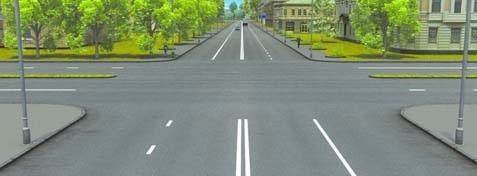
3. Տրանսպորտային միջոցների շահագործումն արգելվում է, եթե`
4. Տրանսպորտային միջոցների շահագործումն արգելվում է, եթե՝
5. Խաչմերուկում կազմակերպված է շրջանաձև երթևեկություն: Երթևեկելի մասը, որով մոտենում եք խաչմերուկին, ունի երթևեկության երկու գոտի: Խաչմերուկ մուտք գործելիս` շրջադարձ կատարելու համար ո՞ր գոտին եք պարտավոր զբաղեցնել`
6. Նշաններից ո՞րն է արգելում երթևեկությունը նշանի վրա պատկերվածից ավելի փոքր միջտարածությամբ:

7. Ո՞ր ճանապարհային նշանների ազդեցությունը չի տարածվում ընդհանուր օգտագործման տրանսպորտային միջոցների վրա:
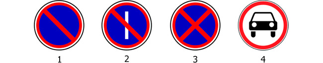
8. Ո՞ր տրանսպորտային միջոցի վարորդն է ճիշտ մուտք գործում շրջանաձև երթևեկությամբ ճանապարհ:
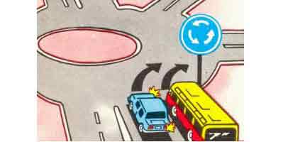
9. Թույլատրվա՞ծ է հետընթացն այս իրավիճակում
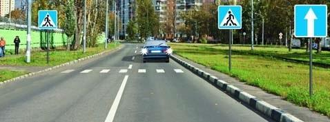
10. Ցուցանակներից որոնք են, իրենց հետ տեղակայված նշանի ազդման գոտին ցույց տալիս
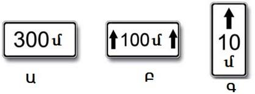
11. Տրամվային զիջել
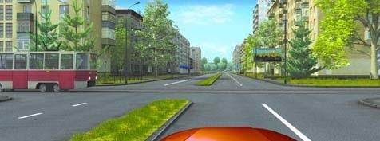
12. Թու՞յլատրվում է ուղևոր նստեցնելու նպատակով կանգառը նշված իրավիճակում
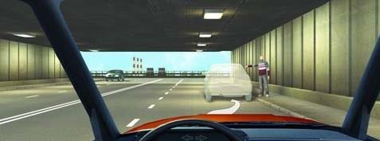
13. Ընդհատվող գծանշման գծիկների մեծացումը հայտնում է
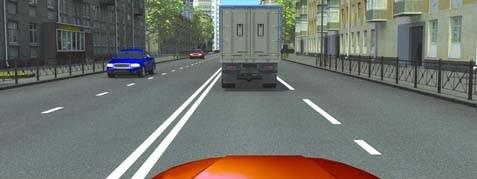
14. Այս լուսացույցը կիրառվում է`
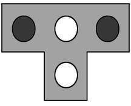
15. Որ տրանսպորտային միջոցների վարորդներն են սխալ կանգառ կատարել ուղևորներն իջեցնելու համար:
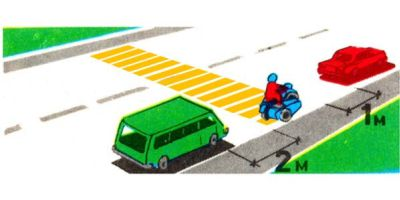
16. Մարդկանց փոխադրումն արգելվում է, եթե`
17. Օրվա մութ ժամանակ և անբավարար տեսանելիության պայմաններում` անկախ ճանապարհի լուսավորվածությունից, երթևեկող մեխանիկական տրանսպորտային միջոցների վրա պետք է միացված լինեն`
18. Ո՞ր հետագծով է թույլատրվում մոտենալ մայթեզրում սպասող հետիոտնին
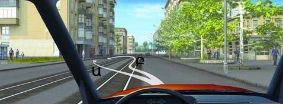
19. Ձախ շրջադարձ կատարելիս պարտավոր եք զիջել ճանապարհը
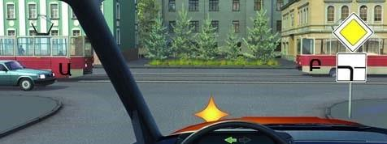